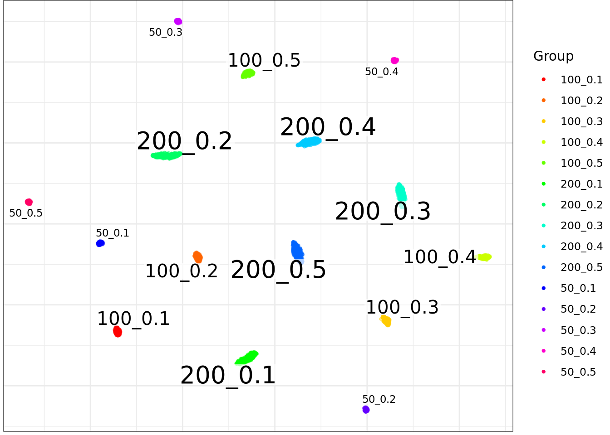
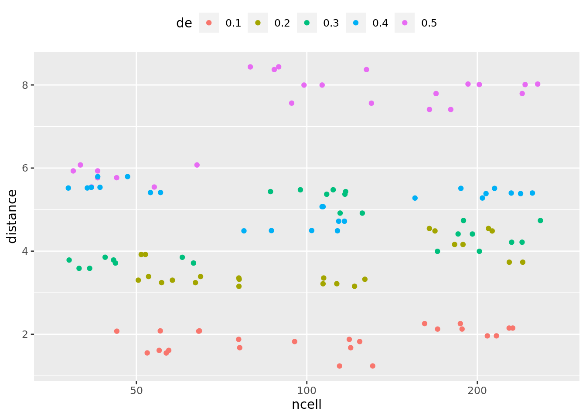

Last updated: 2021-03-21
Checks: 6 1
Knit directory: SecretUtils/
This reproducible R Markdown analysis was created with workflowr (version 1.6.2). The Checks tab describes the reproducibility checks that were applied when the results were created. The Past versions tab lists the development history.
Great! Since the R Markdown file has been committed to the Git repository, you know the exact version of the code that produced these results.
Great job! The global environment was empty. Objects defined in the global environment can affect the analysis in your R Markdown file in unknown ways. For reproduciblity it’s best to always run the code in an empty environment.
The command set.seed(20190415) was run prior to running the code in the R Markdown file. Setting a seed ensures that any results that rely on randomness, e.g. subsampling or permutations, are reproducible.
Great job! Recording the operating system, R version, and package versions is critical for reproducibility.
Nice! There were no cached chunks for this analysis, so you can be confident that you successfully produced the results during this run.
Using absolute paths to the files within your workflowr project makes it difficult for you and others to run your code on a different machine. Change the absolute path(s) below to the suggested relative path(s) to make your code more reproducible.
| absolute | relative |
|---|---|
| /home/larsc/SecretUtils | . |
Great! You are using Git for version control. Tracking code development and connecting the code version to the results is critical for reproducibility.
The results in this page were generated with repository version d394136. See the Past versions tab to see a history of the changes made to the R Markdown and HTML files.
Note that you need to be careful to ensure that all relevant files for the analysis have been committed to Git prior to generating the results (you can use wflow_publish or wflow_git_commit). workflowr only checks the R Markdown file, but you know if there are other scripts or data files that it depends on. Below is the status of the Git repository when the results were generated:
Ignored files:
Ignored: .Rhistory
Ignored: .Rproj.user/
Ignored: analysis/mouse_alzheimer.nb.html
Ignored: analysis/mouse_alzheimer_preproc.nb.html
Ignored: analysis/muscat_lamp5.nb.html
Ignored: analysis/sanity_check.nb.html
Untracked files:
Untracked: .Rbuildignore
Untracked: R/asdf_bk
Untracked: R/hello.R
Untracked: R_bk/
Untracked: analysis/eps_joint_all.bmp
Untracked: analysis/grid_of_grids.pdf
Untracked: analysis/make_scanpy_viktor.R
Untracked: analysis/morphine.Rmd
Untracked: analysis/mouse_alzheimer_annotating.Rmd
Untracked: analysis/mouse_alzheimer_preproc.Rmd
Untracked: analysis/paga.Rmd
Untracked: analysis/paga3.Rmd
Untracked: analysis/pca_dependency.Rmd
Untracked: analysis/simulate_data.Rmd
Untracked: analysis/simulate_data2.Rmd
Untracked: analysis/simulate_data3.Rmd
Untracked: analysis/simulations_plots3_bk.Rmd
Untracked: analysis/simulations_plots4.Rmd
Untracked: analysis/simulations_plots5_bk.Rmd
Untracked: analysis/simulations_plots6.Rmd
Untracked: analysis/subtype_distances.Rmd
Untracked: analysis/subtype_distances2.Rmd
Untracked: analysis/subtype_distances4.Rmd
Untracked: analysis/subtype_distances_redux.Rmd
Untracked: analysis/subtype_distances_revenge.Rmd
Untracked: analysis/test_output.Rmd
Untracked: analysis/transmute_peters_code.Rmd
Untracked: man/
Untracked: new_dists.Rmd
Untracked: new_dists.nb.html
Untracked: new_dists_bk.Rmd
Unstaged changes:
Modified: R/splatter_utils.R
Modified: analysis/correlation_stuff.Rmd
Modified: analysis/jensen_shannon_stuff.Rmd
Modified: analysis/misc_metrics.Rmd
Modified: analysis/paga2.Rmd
Modified: analysis/paga_analyses.Rmd
Modified: analysis/pancreas_indrop.Rmd
Modified: analysis/sanity_check.Rmd
Modified: analysis/simulations_plots.Rmd
Modified: analysis/simulations_plots3.Rmd
Modified: analysis/simulations_plots5.Rmd
Modified: analysis/simulations_plots_intro.Rmd
Modified: analysis/subtype_distances3.Rmd
Modified: analysis/transmute_code_eps.Rmd
Modified: analysis/transmute_code_eps_2.Rmd
Modified: analysis/visualizations.Rmd
Note that any generated files, e.g. HTML, png, CSS, etc., are not included in this status report because it is ok for generated content to have uncommitted changes.
These are the previous versions of the repository in which changes were made to the R Markdown (analysis/muscat_lamp5.Rmd) and HTML (docs/muscat_lamp5.html) files. If you’ve configured a remote Git repository (see ?wflow_git_remote), click on the hyperlinks in the table below to view the files as they were in that past version.
| File | Version | Author | Date | Message |
|---|---|---|---|---|
| Rmd | d394136 | githubz0r | 2021-03-21 | push muscat script |
library(conos)Loading required package: MatrixLoading required package: igraph
Attaching package: 'igraph'The following objects are masked from 'package:stats':
decompose, spectrumThe following object is masked from 'package:base':
unionlibrary(tidyverse)── Attaching packages ─────────────────────────────────────── tidyverse 1.3.0 ──✓ ggplot2 3.3.3 ✓ purrr 0.3.4
✓ tibble 3.1.0 ✓ dplyr 1.0.5
✓ tidyr 1.1.3 ✓ stringr 1.4.0
✓ readr 1.4.0 ✓ forcats 0.5.1── Conflicts ────────────────────────────────────────── tidyverse_conflicts() ──
x dplyr::as_data_frame() masks tibble::as_data_frame(), igraph::as_data_frame()
x purrr::compose() masks igraph::compose()
x tidyr::crossing() masks igraph::crossing()
x tidyr::expand() masks Matrix::expand()
x dplyr::filter() masks stats::filter()
x dplyr::groups() masks igraph::groups()
x dplyr::lag() masks stats::lag()
x tidyr::pack() masks Matrix::pack()
x purrr::simplify() masks igraph::simplify()
x tidyr::unpack() masks Matrix::unpack()library(splatter)Loading required package: SingleCellExperimentLoading required package: SummarizedExperimentLoading required package: MatrixGenericsLoading required package: matrixStats
Attaching package: 'matrixStats'The following object is masked from 'package:dplyr':
count
Attaching package: 'MatrixGenerics'The following objects are masked from 'package:matrixStats':
colAlls, colAnyNAs, colAnys, colAvgsPerRowSet, colCollapse,
colCounts, colCummaxs, colCummins, colCumprods, colCumsums,
colDiffs, colIQRDiffs, colIQRs, colLogSumExps, colMadDiffs,
colMads, colMaxs, colMeans2, colMedians, colMins, colOrderStats,
colProds, colQuantiles, colRanges, colRanks, colSdDiffs, colSds,
colSums2, colTabulates, colVarDiffs, colVars, colWeightedMads,
colWeightedMeans, colWeightedMedians, colWeightedSds,
colWeightedVars, rowAlls, rowAnyNAs, rowAnys, rowAvgsPerColSet,
rowCollapse, rowCounts, rowCummaxs, rowCummins, rowCumprods,
rowCumsums, rowDiffs, rowIQRDiffs, rowIQRs, rowLogSumExps,
rowMadDiffs, rowMads, rowMaxs, rowMeans2, rowMedians, rowMins,
rowOrderStats, rowProds, rowQuantiles, rowRanges, rowRanks,
rowSdDiffs, rowSds, rowSums2, rowTabulates, rowVarDiffs, rowVars,
rowWeightedMads, rowWeightedMeans, rowWeightedMedians,
rowWeightedSds, rowWeightedVarsLoading required package: GenomicRangesLoading required package: stats4Loading required package: BiocGenericsLoading required package: parallel
Attaching package: 'BiocGenerics'The following objects are masked from 'package:parallel':
clusterApply, clusterApplyLB, clusterCall, clusterEvalQ,
clusterExport, clusterMap, parApply, parCapply, parLapply,
parLapplyLB, parRapply, parSapply, parSapplyLBThe following objects are masked from 'package:dplyr':
combine, intersect, setdiff, unionThe following objects are masked from 'package:igraph':
normalize, path, unionThe following objects are masked from 'package:stats':
IQR, mad, sd, var, xtabsThe following objects are masked from 'package:base':
anyDuplicated, append, as.data.frame, basename, cbind, colnames,
dirname, do.call, duplicated, eval, evalq, Filter, Find, get, grep,
grepl, intersect, is.unsorted, lapply, Map, mapply, match, mget,
order, paste, pmax, pmax.int, pmin, pmin.int, Position, rank,
rbind, Reduce, rownames, sapply, setdiff, sort, table, tapply,
union, unique, unsplit, which.max, which.minLoading required package: S4Vectors
Attaching package: 'S4Vectors'The following objects are masked from 'package:dplyr':
first, renameThe following object is masked from 'package:tidyr':
expandThe following object is masked from 'package:Matrix':
expandThe following object is masked from 'package:base':
expand.gridLoading required package: IRanges
Attaching package: 'IRanges'The following objects are masked from 'package:dplyr':
collapse, desc, sliceThe following object is masked from 'package:purrr':
reduceLoading required package: GenomeInfoDbLoading required package: BiobaseWelcome to Bioconductor
Vignettes contain introductory material; view with
'browseVignettes()'. To cite Bioconductor, see
'citation("Biobase")', and for packages 'citation("pkgname")'.
Attaching package: 'Biobase'The following object is masked from 'package:MatrixGenerics':
rowMediansThe following objects are masked from 'package:matrixStats':
anyMissing, rowMedianslibrary(muscat)
library(SingleCellExperiment)
devtools::load_all('/home/larsc/SecretUtils')ℹ Loading SecretUtilsLoading required package: magrittr
Attaching package: 'magrittr'The following object is masked from 'package:purrr':
set_namesThe following object is masked from 'package:tidyr':
extractLoading required package: reshape2
Attaching package: 'reshape2'The following object is masked from 'package:tidyr':
smithsepilepsy_con <- readRDS(file.path('/home/larsc/data/10x_preproced_graphed.rds'))
epilepsy_annot <- readRDS(file.path('/home/demharters/R/projects/UPF9_14_17_19_22_23_24_32_33/metadata_10x_final.rds'))
epilepsy_annot$cellid <- rownames(epilepsy_annot)
raw_cm <- RbindRaw(epilepsy_con)lamp5_healthy_annot <- epilepsy_annot %>% filter(subtype=='L2_Lamp5', condition=='healthy')
lamp5_healthy_cm <- raw_cm[lamp5_healthy_annot$cellid, ]
data(sce) # reference sce object from muscat package
sce@assays@data$counts %>% dim[1] 1267 1556lamp5_sce <- SingleCellExperiment(list(counts=Matrix::t(lamp5_healthy_cm)),
colData=DataFrame(cluster_id = lamp5_healthy_annot$subtype,
sample_id = lamp5_healthy_annot$sample,
group_id = lamp5_healthy_annot$condition))
#ref <- prepSim(lamp5_sce, verbose = FALSE)
#saveRDS(ref, file.path('/home/larsc/data/lamp5_prepsim.rds'))
ref <- readRDS(file.path('/home/larsc/data/lamp5_prepsim.rds'))
sub <- assay(lamp5_sce[rownames(ref), colnames(ref)])
all.equal(exp(ref$offset), as.numeric(colSums(sub)))[1] TRUEsim <- simData(ref, p_dd = diag(6)[1, ],
nk = 3, ns = 3, nc = 2e3,
ng = 1e3, force = TRUE)
table(sim$sample_id, sim$cluster_id)
cluster1 cluster2 cluster3
sample1.A 108 109 112
sample2.A 113 99 125
sample3.A 109 118 122
sample1.B 106 106 106
sample2.B 119 90 114
sample3.B 116 123 105generateSims <- function(sce.obj, ncell, ngenes, nreplicates, varied.factor){
de.proportions <- 1:5 %>% lapply(function(x){c(1-x*1e-1, 0, x*1e-1, 0, 0, 0)})
sims <- de.proportions %>% lapply(function(prop.vec){
sim.obj <- muscat::simData(
sce.obj, p_dd = prop.vec, nk = 1, ns = nreplicates, nc = ncell*2, ng = ngenes, force = TRUE)
sim.obj@colData$de <- prop.vec[3]
sim.obj@colData[[varied.factor]] <- get(varied.factor)
sim.obj@colData$cellid <- paste(rownames(sim.obj@colData), prop.vec[3], get(varied.factor), sep='_')
colnames(sim.obj@assays@data$counts) <- sim.obj@colData$cellid
return(sim.obj)
})
names(sims) <- 1:5*1e-1
return(sims)
}
#sims_100cell <- generateSims(ref, ncell=100, ngenes=1000, nreplicates=2, 'ncell')
# maybe extract gene info as well from the sim objects
extractSimItems <- function(sims.by.de){
cm.bound <- sims.by.de %>% lapply(function(sim.obj){
Matrix::t(sim.obj@assays@data$counts)
}) %>% do.call(rbind, .)
annot.bound <- sims.by.de %>% lapply(function(sim.obj){
df <- data.frame(sim.obj@colData)
rownames(df) <- NULL
return(df)
}) %>% dplyr::bind_rows()
gene.infos <- sims.by.de %>% lapply(function(sim.obj){
sim.obj@metadata$gene_info
})
return(list(cm = cm.bound, annot = annot.bound, gene.infos = gene.infos))
}
#sim100cellconc <- sims_100cell %>% extractSimItems()
#sim100cellconc$annot %>% head
ncell_values <- c(50, 100, 200)
SimAndExtract <- function(sce.obj, ncell, ngenes, nreplicates, varied.factor){
if (varied.factor=='ncell'){
sims.per.factor <- ncell %>% lapply(function(ncell.val){
sim.items <- generateSims(sce.obj, ncell.val, ngenes, nreplicates, varied.factor) %>%
extractSimItems()
})
} else if (varied.factor=='ngenes'){
sims.per.factor <- ngenes %>% lapply(function(ngene.val){
sim.items <- generateSims(sce.obj, ncell, ngene.val, nreplicates, varied.factor) %>%
extractSimItems()
})
}
cm <- sims.per.factor %>% lapply(function(x){x$cm}) %>% do.call(rbind, .)
annot <- sims.per.factor %>% lapply(function(x){x$annot}) %>% dplyr::bind_rows()
gene.infos <- sims.per.factor %>% lapply(function(x){x$gene.infos})
return(list(cm = cm, annot = annot, gene.infos = gene.infos))
}
sims_per_ncell <- SimAndExtract(ref, ncell_values, 1000, 2, 'ncell')Now we can build p2 -> conos -> cacoa
sim_annot <- sims_per_ncell$annot
sim_annot %<>% mutate(celltype=paste0(ncell, '_', de))
sim_cm <- sims_per_ncell$cm
cms_by_sample <- sim_annot$cellid %>% split(sim_annot$sample_id) %>% lapply(function(x){sim_cm[x, ]})
sim_p2s <- lapply(cms_by_sample %>% lapply(Matrix::t), pagoda2::basicP2proc, n.cores=1, min.cells.per.gene=0, n.odgenes=2e3,
get.largevis=FALSE, make.geneknn=FALSE, get.tsne=FALSE, min.transcripts.per.cell=1)911 cells, 1000 genes; normalizing ... Using plain model Winsorizing ... log scale ... done.calculating variance fit ... using gam 28 overdispersed genes ... 28persisting ... done.running PCA using 1000 OD genes ..
.
. donecreating space of type angular done
adding data ... done
building index ... done
querying ... done875 cells, 1000 genes; normalizing ... Using plain model Winsorizing ... log scale ... done.calculating variance fit ... using gam 31 overdispersed genes ... 31persisting ... done.running PCA using 1000 OD genes ..
.
. donecreating space of type angular done
adding data ... done
building index ... done
querying ... done841 cells, 1000 genes; normalizing ... Using plain model Winsorizing ... log scale ... done.calculating variance fit ... using gam 26 overdispersed genes ... 26persisting ... done.running PCA using 1000 OD genes ..
.
. donecreating space of type angular done
adding data ... done
building index ... done
querying ... done873 cells, 1000 genes; normalizing ... Using plain model Winsorizing ... log scale ... done.calculating variance fit ... using gam 11 overdispersed genes ... 11persisting ... done.running PCA using 1000 OD genes ..
.
. donecreating space of type angular done
adding data ... done
building index ... done
querying ... donesim_conos <- Conos$new(sim_p2s)
sim_conos$buildGraph(n.odgenes=1000) # crashes if the value is higher than actual genes presentfound 0 out of 6 cached PCA space pairs ... running 6 additional PCA space pairs doneinter-sample links using mNN donelocal pairs donebuilding graph ..donesim_conos$embedGraph(method='largeVis')Estimating embeddings.sim_samples_con <- setNames(sim_annot$sample_id, sim_annot$cellid)
sim_condition_con <- setNames(sim_annot$group_id, sim_annot$cellid)
sim_celltype_con <- setNames(sim_annot$celltype, sim_annot$cellid)
sim_conos$plotGraph(groups = sim_celltype_con, show.legend=T)
cacoa
sim_sample_grps <- sim_annot %>% split(sim_annot$sample_id) %>% lapply(function(x){x$group_id %>% unique}) %>% unlist()
sim_cell_grps <- setNames(sim_annot$celltype, sim_annot$cellid)
cao <- cacoa::Cacoa$new(sim_conos, sample.groups=sim_sample_grps, cell.groups=sim_cell_grps, n.cores=10,
target.level='B', ref.level='A')res <- cao$estimateExpressionShiftMagnitudes(min.cells=5, dist="cor", n.subsamples=50)setting group size of 100 cells for comparisons
running 50 subsamples using 10 cores ...
calculating distances ... done!dist.per.type <- res$dist.df %$% split(value, Type)
dist.df <- dist.per.type %>% data.frame
names(dist.df) <- names(dist.per.type) # stupid appending of characters when casting to df
dist.df <- dist.df %>% tidyr::pivot_longer(cols=everything(), names_to='celltype', values_to='distance')
ncell_de_list <- strsplit(dist.df$celltype, '_')
dist.df %<>% mutate(ncell = as.factor(as.numeric(ncell_de_list %>% lapply(function(x){x[[1]]}) %>% unlist)),
de = ncell_de_list %>% lapply(function(x){x[[2]]}) %>% unlist,)
dist.df %>% ggplot(aes(x=ncell, y=distance, col=de))+geom_jitter()+ theme(legend.position="top")
sessionInfo()R version 4.0.4 (2021-02-15)
Platform: x86_64-pc-linux-gnu (64-bit)
Running under: Ubuntu 18.04.2 LTS
Matrix products: default
BLAS: /usr/lib/x86_64-linux-gnu/atlas/libblas.so.3.10.3
LAPACK: /usr/lib/x86_64-linux-gnu/atlas/liblapack.so.3.10.3
locale:
[1] LC_CTYPE=en_US.UTF-8 LC_NUMERIC=C
[3] LC_TIME=en_US.UTF-8 LC_COLLATE=en_US.UTF-8
[5] LC_MONETARY=en_US.UTF-8 LC_MESSAGES=en_US.UTF-8
[7] LC_PAPER=en_US.UTF-8 LC_NAME=C
[9] LC_ADDRESS=C LC_TELEPHONE=C
[11] LC_MEASUREMENT=en_US.UTF-8 LC_IDENTIFICATION=C
attached base packages:
[1] parallel stats4 stats graphics grDevices utils datasets
[8] methods base
other attached packages:
[1] SecretUtils_0.1.0 reshape2_1.4.4
[3] magrittr_2.0.1 muscat_1.5.1
[5] splatter_1.14.1 SingleCellExperiment_1.12.0
[7] SummarizedExperiment_1.20.0 Biobase_2.50.0
[9] GenomicRanges_1.42.0 GenomeInfoDb_1.26.4
[11] IRanges_2.24.1 S4Vectors_0.28.1
[13] BiocGenerics_0.36.0 MatrixGenerics_1.2.1
[15] matrixStats_0.58.0 forcats_0.5.1
[17] stringr_1.4.0 dplyr_1.0.5
[19] purrr_0.3.4 readr_1.4.0
[21] tidyr_1.1.3 tibble_3.1.0
[23] ggplot2_3.3.3 tidyverse_1.3.0
[25] conos_1.4.0 igraph_1.2.6
[27] Matrix_1.3-2 workflowr_1.6.2
loaded via a namespace (and not attached):
[1] dendsort_0.3.3 R.methodsS3_1.8.1
[3] bit64_4.0.5 knitr_1.31
[5] R.utils_2.10.1 irlba_2.3.3
[7] DelayedArray_0.16.2 Rook_1.1-1
[9] data.table_1.14.0 RCurl_1.98-1.3
[11] doParallel_1.0.16 generics_0.1.0
[13] cowplot_1.1.1 callr_3.5.1
[15] usethis_2.0.1 RSQLite_2.2.4
[17] shadowtext_0.0.7 future_1.21.0
[19] enrichplot_1.10.2 bit_4.0.4
[21] xml2_1.3.2 lubridate_1.7.10
[23] httpuv_1.5.5 assertthat_0.2.1
[25] viridis_0.5.1 xfun_0.22
[27] RMTstat_0.3 hms_1.0.0
[29] evaluate_0.14 promises_1.2.0.1
[31] fansi_0.4.2 progress_1.2.2
[33] caTools_1.18.1 dbplyr_2.1.0
[35] readxl_1.3.1 DBI_1.1.1
[37] geneplotter_1.68.0 ellipsis_0.3.1
[39] backports_1.2.1 annotate_1.68.0
[41] sparseMatrixStats_1.2.1 vctrs_0.3.6
[43] remotes_2.2.0 Cairo_1.5-12.2
[45] abind_1.4-5 cachem_1.0.4
[47] withr_2.4.1 ggforce_0.3.3
[49] grr_0.9.5 triebeard_0.3.0
[51] checkmate_2.0.0 sctransform_0.3.2
[53] prettyunits_1.1.1 DOSE_3.16.0
[55] cluster_2.1.1 ape_5.4-1
[57] crayon_1.4.1 genefilter_1.72.1
[59] labeling_0.4.2 edgeR_3.32.1
[61] pkgconfig_2.0.3 tweenr_1.0.1
[63] drat_0.1.8 nlme_3.1-152
[65] vipor_0.4.5 pkgload_1.2.0
[67] blme_1.0-5 devtools_2.3.2
[69] rlang_0.4.10 globals_0.14.0
[71] lifecycle_1.0.0 modelr_0.1.8
[73] rsvd_1.0.3 polyclip_1.10-0
[75] cellranger_1.1.0 rprojroot_2.0.2
[77] urltools_1.7.3 boot_1.3-27
[79] Matrix.utils_0.9.8 reprex_1.0.0
[81] beeswarm_0.3.1 whisker_0.4
[83] GlobalOptions_0.1.2 processx_3.4.5
[85] png_0.1-7 viridisLite_0.3.0
[87] rjson_0.2.20 bitops_1.0-6
[89] R.oo_1.24.0 KernSmooth_2.23-18
[91] blob_1.2.1 DelayedMatrixStats_1.12.3
[93] shape_1.4.5 qvalue_2.22.0
[95] brew_1.0-6 parallelly_1.24.0
[97] sccore_0.1.2 beachmat_2.6.4
[99] scales_1.1.1 memoise_2.0.0
[101] plyr_1.8.6 gplots_3.1.1
[103] zlibbioc_1.36.0 scatterpie_0.1.5
[105] compiler_4.0.4 p2data_1.0.0
[107] RColorBrewer_1.1-2 clue_0.3-58
[109] lme4_1.1-26 DESeq2_1.30.1
[111] cli_2.3.1 XVector_0.30.0
[113] lmerTest_3.1-3 listenv_0.8.0
[115] pbapply_1.4-3 ps_1.6.0
[117] TMB_1.7.19 mgcv_1.8-34
[119] MASS_7.3-53.1 tidyselect_1.1.0
[121] stringi_1.5.3 highr_0.8
[123] GOSemSim_2.16.1 yaml_2.2.1
[125] BiocSingular_1.6.0 locfit_1.5-9.4
[127] ggrepel_0.9.1 pbmcapply_1.5.0
[129] grid_4.0.4 fastmatch_1.1-0
[131] cacoa_0.1 tools_4.0.4
[133] future.apply_1.7.0 circlize_0.4.12
[135] rstudioapi_0.13 foreach_1.5.1
[137] git2r_0.28.0 gridExtra_2.3
[139] farver_2.1.0 Rtsne_0.15
[141] ggraph_2.0.5 BiocManager_1.30.10
[143] rvcheck_0.1.8 digest_0.6.27
[145] Rcpp_1.0.6 broom_0.7.5
[147] scuttle_1.0.4 later_1.1.0.1
[149] httr_1.4.2 AnnotationDbi_1.52.0
[151] ComplexHeatmap_2.6.2 N2R_0.1.1
[153] colorspace_2.0-0 rvest_1.0.0
[155] XML_3.99-0.6 fs_1.5.0
[157] splines_4.0.4 statmod_1.4.35
[159] graphlayouts_0.7.1 scater_1.18.6
[161] sessioninfo_1.1.1 xtable_1.8-4
[163] jsonlite_1.7.2 nloptr_1.2.2.2
[165] tidygraph_1.2.0 leidenAlg_0.1.1
[167] testthat_3.0.2 R6_2.5.0
[169] pillar_1.5.1 htmltools_0.5.1.1
[171] glue_1.4.2 fastmap_1.1.0
[173] minqa_1.2.4 BiocParallel_1.24.1
[175] pagoda2_1.0.2 BiocNeighbors_1.8.2
[177] codetools_0.2-18 fgsea_1.16.0
[179] pkgbuild_1.2.0 utf8_1.2.1
[181] lattice_0.20-41 numDeriv_2016.8-1.1
[183] pbkrtest_0.5.1 ggbeeswarm_0.6.0
[185] colorRamps_2.3 gtools_3.8.2
[187] GO.db_3.12.1 survival_3.2-7
[189] limma_3.46.0 glmmTMB_1.0.2.1
[191] rmarkdown_2.7 desc_1.3.0
[193] munsell_0.5.0 DO.db_2.9
[195] GetoptLong_1.0.5 GenomeInfoDbData_1.2.4
[197] iterators_1.0.13 variancePartition_1.20.0
[199] haven_2.3.1 gtable_0.3.0